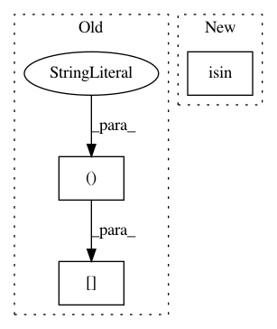

16e40ab0ab40d27950ef70e79b35f60c888c4ba6,networkml/featurizers/funcs/host.py,HostBase,_tshark_ratio_ports,#HostBase#,138
Before Change
continue
src = proto_df["%s.srcport" % ip_proto]
dst = proto_df["%s.dstport" % ip_proto]
for field_name, wk_ports in (
("priv", self.WK_PRIV_TCPUDP_PORTS),
("nonpriv", self.WK_NONPRIV_TCPUDP_PORTS),
):
src_counts = src[src.isin(wk_ports)].value_counts()
dst_counts = dst[dst.isin(wk_ports)].value_counts()
for port in wk_ports:
src_count = src_counts.get(port, None)
dst_count = dst_counts.get(port, None)
After Change
dst_count = dst_counts.get(port, None)
mac_row_ports.update({
"tshark_%s_%s_packet_ratio_io_port_%s" % (ip_proto, field_name, port): calc_ratio(src_count, dst_count)})
src_count = port_src[~port_src.isin(wk_ports)].value_counts().sum()
dst_count = port_dst[~port_dst.isin(wk_ports)].value_counts().sum()
mac_row_ports.update({
"tshark_%s_%s_packet_ratio_io_port_%s" % (ip_proto, field_name, "other"): calc_ratio(src_count, dst_count)})
In pattern: SUPERPATTERN
Frequency: 3
Non-data size: 3
Instances
Project Name: CyberReboot/NetworkML
Commit Name: 16e40ab0ab40d27950ef70e79b35f60c888c4ba6
Time: 2020-04-08
Author: josh@vandervecken.com
File Name: networkml/featurizers/funcs/host.py
Class Name: HostBase
Method Name: _tshark_ratio_ports
Project Name: IBM/AIF360
Commit Name: 240d23ec41ee51c72a69fda93148cb534a6688ec
Time: 2020-08-05
Author: hoffman.sc@gmail.com
File Name: aif360/algorithms/inprocessing/meta_fair_classifier.py
Class Name: MetaFairClassifier
Method Name: fit
Project Name: yzhao062/pyod
Commit Name: 24d96c7ec2d80322ceb7a084199b891c9ebf88b9
Time: 2019-03-12
Author: yalmardeny@tssg,org
File Name: pyod/models/sod.py
Class Name: SOD
Method Name: _snn